筆記 <<
Previous Next >> 9443
建立網頁
打開start_ipv4.bat
確認版本
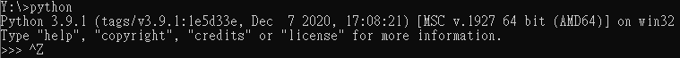
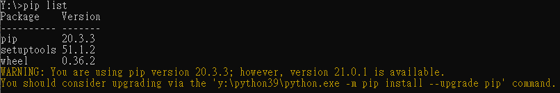
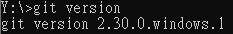
tmp新增git_ref資料夾並在裡面新增git_config.txt
git_config.txt內容為git config --global http.proxy http://[2001:288:6004:17::69]:3128
在home_ipv4新增.gitconfig
.gitconfig內容為
[http]
#proxy = http://[2001:288:6004:17::69]:3128
登入github帳號
新增cd2021
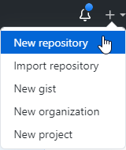
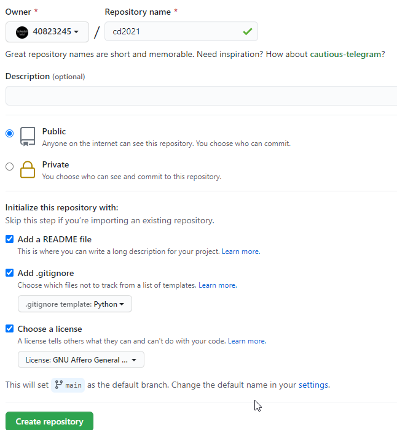
輸入指令(創資料夾)
git clone https://github.com/40823245/cd2021.git
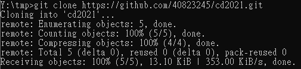
進到cd2021，輸入指令
git submodule add https://github.com/mdecourse/cmsimde.git cmsimde
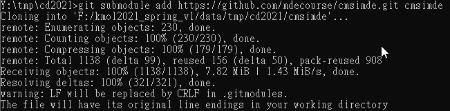
進到cmsimde→up_dir，複製全部(ctrl+A→ctrl+C)
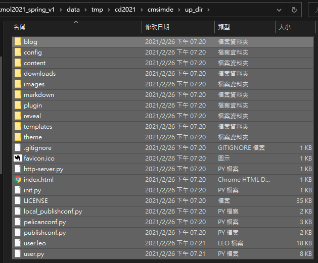
貼到cd2021，會有重複的檔案選擇第3個
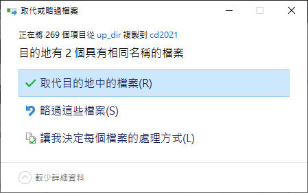
進到cmsimde
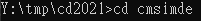
分別輸入pip install flask、pip install flask_cors、pip install lxml、pip install bs4、pip install markdown、pip install pelican、pip install leo指令
載完後輸入python wsgi.py
打開9443，登入(login)輸入密碼(admin)
點config更改title(40823245 cd2021)自己的學號
做編輯，然後save→generate_pages
進到cd2021
git add .
git config user.name "40823245" 自己的學號
git config user.email "40823245@gm.nfu.edu.tw" 自己的信箱
git commit -m "變更所做的標題"
git push(學號和密碼)
到倉儲，點setting
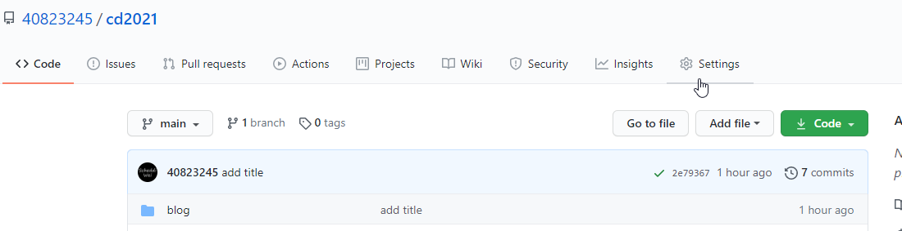
往下到github pages，更改成main→save
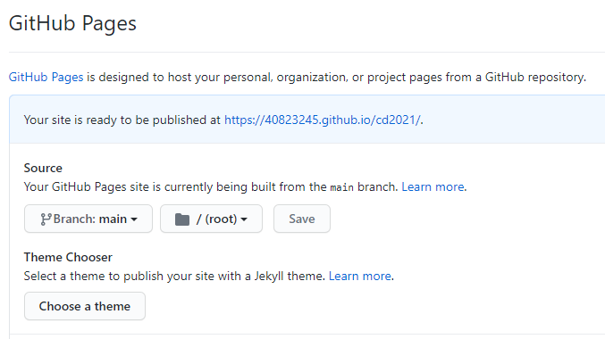
回到倉儲看是否有出現黃球和綠勾
筆記 <<
Previous Next >> 9443